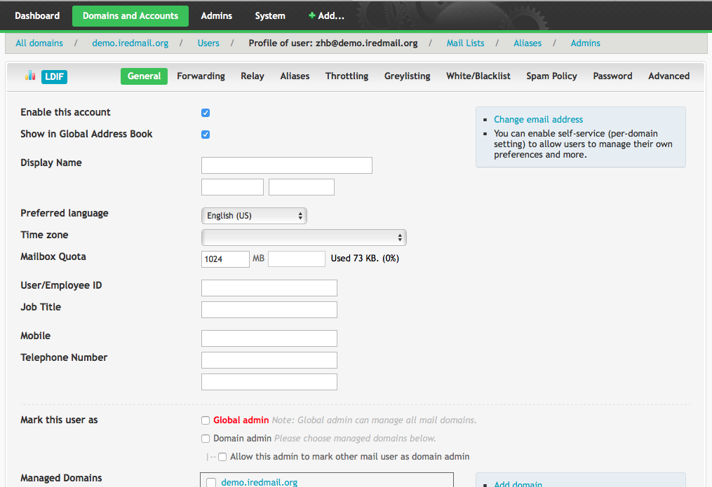

Attention
Check out the lightweight on-premises email archiving software developed by iRedMail team: Spider Email Archiver.
If you forgot password of existing global admin account, or mistakenly removed global admin, you can promote an existing mail user to be a global admin by following this tutorial.
Let's say you want to promote existing mail user john@example.com to be
global admin, here's SQL commands to achieve this goal (note: we use MySQL
for example):
sql> USE vmail;
sql> UPDATE mailbox SET isadmin=1, isglobaladmin=1 WHERE username='john@example.com';
sql> INSERT INTO domain_admins (username, domain) VALUES ('john@example.com', 'ALL');
That's it, you can now login to iRedAdmin as john@example.com (with john@example.com's password).
To promote user smith@test.com to be admin of domain test.com (Note: normal domain admin is only available in iRedAdmin-Pro):
sql> USE vmail;
sql> UPDATE mailbox SET isadmin=1, isglobaladmin=0 WHERE username='smith@test.com';
sql> INSERT INTO domain_admins (username, domain) VALUES ('smith@test.com', 'test.com');
To promote existing mail user john@example.com to be global admin:
john@example.com (its full dn is:
mail=john@example.com,ou=Users,domainName=example.com,o=domains,dc=xx,dc=xx),
add LDAP attribute enabledService=domainadmin and domainGlobalAdmin=yes.To promote existing mail user smith@test.com to be admin of domain test.com:
Update LDAP object of mail user smith@test.com (its full dn is:
mail=smith@test.com,ou=Users,domainName=test.com,o=domains,dc=xx,dc=xx),
add LDAP attribute/value pair: enabledService=domainadmin.
Update LDAP object of mail domain test.com (its full dn is:
domainName=test.com,o=domains,dc=xx,dc=xx), add LDAP attribute/value pair:
domainAdmin=smith@test.com.
With iRedAdmin-Pro, you can mark user as either global domain admin or normal
domain admin in user profile page, under tab General.
